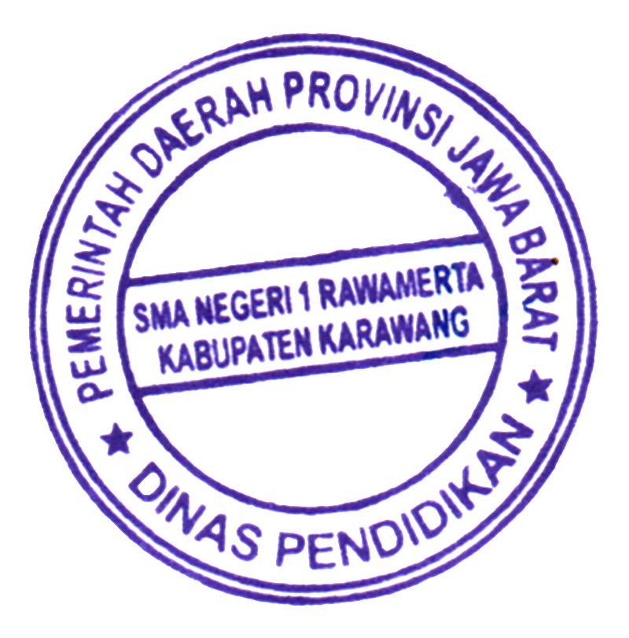
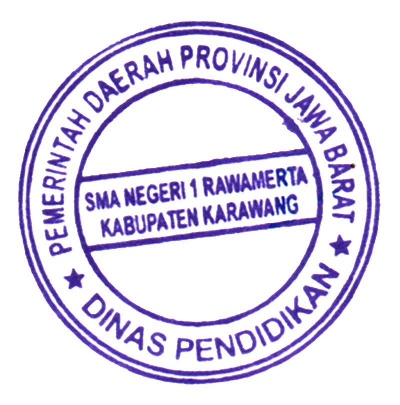

PEMERINTAH DAERAH PROVINSI JAWA BARAT
DINAS PENDIDIKAN
CABANG DINAS PENDIDIKAN WILAYAH IV
SMA NEGERI 1 RAWAMERTA
Jl. Garunggung - Panyingkiran Kec. Rawamerta Kab. Karawang, 41382
Email : sman1rwt@gmail.com Website : https://sman1rawamerta.sch.id
PENGUMUMAN KELULUSAN
Nomor : 421.3/0137/SMAN1RWT/CDP.WIL.IV/2022
Kepala SMA Negeri 1 Rawamerta Selaku Ketua Penyelenggara Ujian Sekolah Tahun Pelajaran 2021/2022 berdasarkan :
- Ketuntasan dari seluruh program pembelajaran pada kurikulum 2013;
- Kriteria kelulusan dari satuan pendidikan sesuai dengan Kurikulum Tingkat Satuan Pendidikan dan peraturan perundang-undangan serta;
- Rapat Pleno Dewan Pendidik tentang Kelulusan pada tanggal 28 April 2022;
menerangkan bahwa :
Nama
:
Tempat, tanggal lahir
: ,
NIS / NISN
: /
Peminatan
:
Dinyatakan
: LULUS
Demikian pengumuman ini dibuat untuk diketahui sebagaimana mestinya.
Rawamerta, 05 Mei 2022
Kepala Sekolah,
 

EPUL SAEPUL, S.Pd.I., M.Pd.
NIP. 19820213 201001 1 003